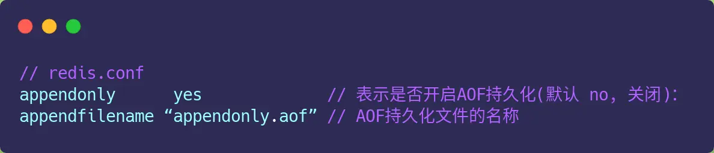

redis-持久化
Redis 共有两种持久化技术，分别是 AOF 日志和 RDB 快照（默认）。
AOF(Append Only File) 日志

只会记录写操作命令，读操作命令是不会被记录的
开启和关闭
默认是不开启的，需要我们修改 redis.conf 配置文件中的以下参数

日志规则

先执行后日志
优点
- 避免额外的检查开销
先执行操作命令，成功后（无语法问题）再记录到AOF日志里。 - 不会阻塞当前写操作命令的执行
写操作成功后才记录到AOF日志
缺点
丢失风险
执行写操作和记录日志是两个过程，那当 Redis 在还没来得及将命令写入到硬盘时，服务器发生宕机了，这个数据就会有丢失的风险。可能会给「下一个」命令带来阻塞风险。
因为将命令写入到日志的这个操作也是在主进程完成的（执行命令也是在主进程），也就是说这两个操作是同步的。如果在将日志内容写入到硬盘时，服务器的硬盘的 I/O 压力太大，就会导致写硬盘的速度很慢，进而阻塞住了，也就会导致后续的命令无法执行。
三种写回策略
- Redis 执行完写操作命令后，会将命令追加到 server.aof_buf 缓冲区；
- 然后通过 write() 系统调用，将 aof_buf 缓冲区的数据写入到 AOF 文件，此时数据并没有写入到硬盘，而是拷贝到了内核缓冲区 page cache，等待内核将数据写入硬盘；
- 具体内核缓冲区的数据什么时候写入到硬盘，由内核决定。
Redis 提供了 3 种写回硬盘的策略，控制的就是上面说的第三步的过程。
在 redis.conf 配置文件中的 appendfsync 配置项可以有以下 3 种参数可填
AOF 重写机制（后台子进程）
Redis 为了避免 AOF 文件越写越大，提供了 AOF 重写机制，当 AOF 文件的大小超过所设定的阈值后，Redis 就会启用 AOF 重写机制，来压缩 AOF 文件。
AOF 重写机制是在重写时，读取当前数据库中的所有键值对，然后将每一个键值对用一条命令记录到「新的 AOF 文件」，等到全部记录完后，就将新的 AOF 文件替换掉现有的 AOF 文件。
Redis 的重写 AOF 过程是由后台子进程 bgrewriteaof 来完成的
1. 子进程进行 AOF 重写期间，主进程可以继续处理命令请求，从而避免阻塞主进程；
2. 子进程带有主进程的数据副本（数据副本怎么产生的后面会说），这里使用子进程而不是线程，因为如果是使用线程，多线程之间会共享内存，那么在修改共享内存数据的时候，需要通过加锁来保证数据的安全，而这样就会降低性能。而使用子进程，创建子进程时，父子进程是共享内存数据的，不过这个共享的内存只能以只读的方式，而当父子进程任意一方修改了该共享内存，就会发生「写时复制」，于是父子进程就有了独立的数据副本，就不用加锁来保证数据安全。
子进程是怎么拥有主进程一样的数据副本的呢？
主进程在通过 fork 系统调用生成 bgrewriteaof 子进程时，操作系统会把主进程的「页表」复制一份给子进程，这个页表记录着虚拟地址和物理地址映射关系，而不会复制物理内存，也就是说，两者的虚拟空间不同，但其对应的物理空间是同一个。
当父进程或者子进程在向这个内存发起写操作时，CPU 就会触发写保护中断，这个写保护中断是由于违反权限导致的，然后操作系统会在「写保护中断处理函数」里进行物理内存的复制，并重新设置其内存映射关系，将父子进程的内存读写权限设置为可读写，最后才会对内存进行写操作，这个过程被称为「写时复制(Copy On Write)」。
所以，有两个阶段会导致阻塞父进程：
1. 创建子进程的途中，由于要复制父进程的页表等数据结构，阻塞的时间跟页表的大小有关，页表越大，阻塞的时间也越长；
2. 创建完子进程后，如果子进程或者父进程修改了共享数据，就会发生写时复制，这期间会拷贝物理内存，如果内存越大，自然阻塞的时间也越长；
重写 AOF 日志过程中，如果主进程修改了已经存在 key-value，此时这个 key-value 数据在子进程的内存数据就跟主进程的内存数据不一致了，这时要怎么办呢？
为了解决这种数据不一致问题，Redis 设置了一个 AOF 重写缓冲区，这个缓冲区在创建 bgrewriteaof 子进程之后开始使用。
当子进程完成 AOF 重写工作（扫描数据库中所有数据，逐一把内存数据的键值对转换成一条命令，再将命令记录到重写日志）后，会向主进程发送一条信号，信号是进程间通讯的一种方式，且是异步的。
主进程收到该信号后，会调用一个信号处理函数，该函数主要做以下工作：
1. 将 AOF 重写缓冲区中的所有内容追加到新的 AOF 的文件中，使得新旧两个 AOF 文件所保存的数据库状态一致；
2. 新的 AOF 的文件进行改名，覆盖现有的 AOF 文件。
RDB() 快照
RDB 快照就是记录某一个瞬间的内存数据，记录的是实际数据。
RDB 文件的内容是二进制数据。
因此在 Redis 恢复数据时， RDB 恢复数据的效率会比 AOF 高些，因为直接将 RDB 文件读入内存就可以，不需要像 AOF 那样还需要额外执行操作命令的步骤才能恢复数据。
快照怎么用
Redis 提供了两个命令来生成 RDB 文件，分别是 save 和 bgsave，他们的区别就在于是否在「主线程」里执行：
1. 执行了 save 命令，就会在主线程生成 RDB 文件，由于和执行操作命令在同一个线程，所以如果写入 RDB 文件的时间太长，会阻塞主线程；
2. 执行了 bgsave 命令，会创建一个子进程来生成 RDB 文件，这样可以避免主线程的阻塞；
RDB 文件的加载工作是在服务器启动时自动执行的
Redis 还可以通过配置文件的选项来实现每隔一段时间自动执行一次 bgsave 命令，默认会提供以下配置：
save 900 1
save 300 10
save 60 10000
别看选项名叫 save，实际上执行的是 bgsave 命令，也就是会创建子进程来生成 RDB 快照文件。
只要满足上面条件的任意一个，就会执行 bgsave，它们的意思分别是：
900 秒之内，对数据库进行了至少 1 次修改；
300 秒之内，对数据库进行了至少 10 次修改；
60 秒之内，对数据库进行了至少 10000 次修改。
缺点
执行快照是一个比较重的操作，如果频率太频繁，可能会对 Redis 性能产生影响。如果频率太低，服务器故障时，丢失的数据会更多。
通常可能设置至少 5 分钟才保存一次快照，这时如果 Redis 出现宕机等情况，则意味着最多可能丢失 5 分钟数据。
这就是 RDB 快照的缺点，在服务器发生故障时，丢失的数据会比 AOF 持久化的方式更多，因为 RDB 快照是全量快照的方式，因此执行的频率不能太频繁，否则会影响 Redis 性能。而 AOF 日志可以以秒级的方式记录操作命令，所以丢失的数据就相对更少。
执行快照时，数据能被修改吗？
执行 bgsave 过程中，Redis 依然可以继续处理操作命令的，也就是数据是能被修改的。
那具体如何做到到呢？关键的技术就在于写时复制技术（Copy-On-Write, COW）。
bgsave 快照过程中，如果主线程修改了共享数据，发生了写时复制后，RDB 快照保存的是原本的内存数据，而主线程刚修改的数据，是没办法在这一时间写入 RDB 文件的，只能交由下一次的 bgsave 快照。
所以 Redis 在使用 bgsave 快照过程中，如果主线程修改了内存数据，不管是否是共享的内存数据，RDB 快照都无法写入主线程刚修改的数据，因为此时主线程（父进程）的内存数据和子进程的内存数据已经分离了，子进程写入到 RDB 文件的内存数据只能是原本的内存数据。
在 Redis 执行 RDB 持久化期间，刚 fork 时，主进程和子进程共享同一物理内存，但是途中主进程处理了写操作，修改了共享内存，于是当前被修改的数据的物理内存就会被复制一份。
那么极端情况下，如果所有的共享内存都被修改，则此时的内存占用是原先的 2 倍。
RDB 和 AOF 合体
那有没有什么方法不仅有 RDB 恢复速度快的优点和，又有 AOF 丢失数据少的优点呢？
当然有，那就是将 RDB 和 AOF 合体使用，这个方法是在 Redis 4.0 提出的，该方法叫混合使用 AOF 日志和内存快照，也叫混合持久化。
如果想要开启混合持久化功能，可以在 Redis 配置文件将下面这个配置项设置成 yes：
aof-use-rdb-preamble yes
混合持久化工作在 AOF 日志重写过程。
1. 在 AOF 重写日志时，fork 出来的重写子进程会先将与主线程共享的内存数据以 RDB 方式写入到 AOF 文件；
2. 然后主线程处理的操作命令会被记录在重写缓冲区里，重写缓冲区里的增量命令会以 AOF 方式写入到 AOF 文件
3. 写入完成后通知主进程将新的含有 RDB 格式和 AOF 格式的 AOF 文件替换旧的的 AOF 文件。
AOF 文件的前半部分是 RDB 格式的全量数据，后半部分是 AOF 格式的增量数据。
1. 这样的好处在于，重启 Redis 加载数据的时候，由于前半部分是 RDB 内容，这样加载的时候速度会很快。
2. 加载完 RDB 的内容后，才会加载后半部分的 AOF 内容，这里的内容是 Redis 后台子进程重写 AOF 期间，主线程处理的操作命令，可以使得数据更少的丢失。